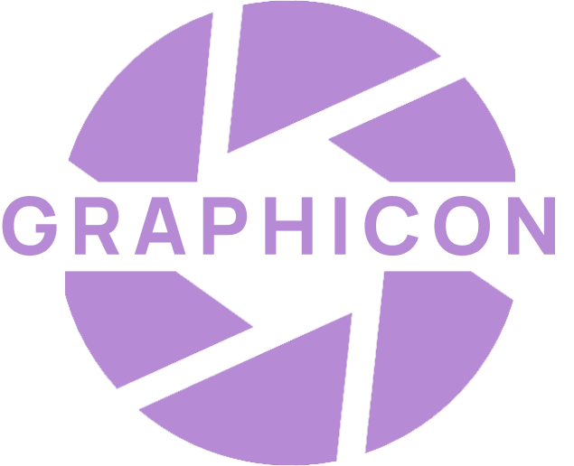

Приложение “Graphicon” - графический редктор с функциями редактирвания и создания новых изображений. В приложении присутствуют различные инструменты для работы с изображениями.
Приятной работы!
Приятной работы!